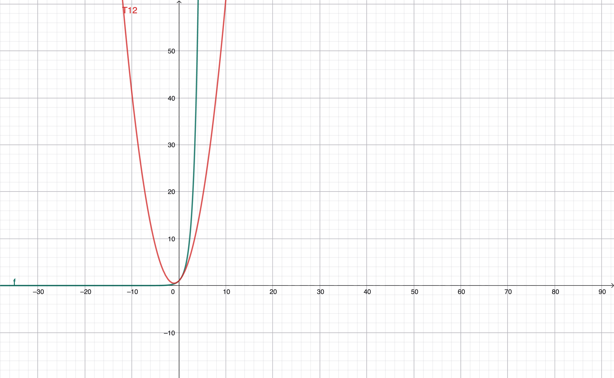

From Taylor Expansion to Euler’s Formula: The Mathematical Foundation of Fourier Series
This reflection explores the beautiful mathematical journey from Taylor expansions to Euler’s formula and ultimately to Fourier series. We’ll see how these concepts naturally build upon each other, revealing deep connections between polynomials, exponentials, and trigonometric functions.
Complex Numbers: Foundation
Complex numbers provide the foundation for understanding Euler’s formula.
Definition: \(i^2 = -1\)
Cyclic behavior: - \(i^1 = i\) - \(i^2 = -1\) - \(i^3 = -i\) - \(i^4 = 1\) - \(i^n = i^{n-4} \cdot i^4 = i^{n-4}\) (the pattern repeats every 4 powers)
Visualization of the periodic behavior:
Taylor Expansion
The Formula
Any analytic function can be expressed as an infinite polynomial around a point \(a\):
\[ f(x) = \sum_{n=0}^{\infty} \frac{f^{(n)}(a)}{n!}(x-a)^n \]
Key insight: A function can be written as a power series if and only if it is analytic. Analyticity means that all derivatives exist and the Taylor remainder goes to zero, so the infinite polynomial determined by the derivatives reconstructs the function exactly.
Proof: Finding the Coefficients
We want to approximate \(f(x)\) using a polynomial:
\[ P(x) = c_0 + c_1(x-a) + c_2(x-a)^2 + c_3(x-a)^3 + \cdots \]
Our goal is to match all derivatives at point \(a\): - \(P(a) = f(a)\) - \(P'(a) = f'(a)\) - \(P''(a) = f''(a)\) - \(P^{(n)}(a) = f^{(n)}(a)\)
Let’s find the coefficients by taking derivatives:
0th-order (evaluating at \(x = a\)):
\[ P(a) = c_0 = f(a) \]
1st-order:
\[ P'(x) = c_1 + 2c_2(x-a) + 3c_3(x-a)^2 + \cdots \]
\[ P'(a) = c_1 = f'(a) \]
2nd-order:
\[ P''(x) = 2c_2 + 6c_3(x-a) + \cdots \]
\[ P''(a) = 2c_2 = f''(a) \]
\[ c_2 = \frac{f''(a)}{2!} \]
nth-order:
\[ P^{(n)}(a) = n! \cdot c_n = f^{(n)}(a) \]
\[ c_n = \frac{f^{(n)}(a)}{n!} \]
Crucial observation: Every lower-order derivative still contains a factor \((x-a)\). For any \(m < n\):
\[ \frac{d^m}{dx^m}(x-a)^n = \text{(some constant)} \cdot (x-a)^{n-m} \]
At \(x = a\), this becomes \((x-a)^{n-m} = 0\). So all lower-order derivatives vanish at \(x = a\), which is why each derivative gives us exactly one coefficient.
Visualization: Approximating \(e^x\)
Let’s visualize how different order Taylor polynomials approximate \(e^x\) around \(x = 0\):
First-order approximation: \(P(x) = c_0 + c_1(x-a) = 1 + x\)

Second-order approximation: \(P(x) = c_0 + c_1(x-a) + c_2(x-a)^2 = 1 + x + \frac{x^2}{2}\)

Third-order approximation: \(P(x) = c_0 + c_1(x-a) + c_2(x-a)^2 + c_3(x-a)^3 = 1 + x + \frac{x^2}{2} + \frac{x^3}{6}\)

Fourth-order approximation: \(P(x) = 1 + x + \frac{x^2}{2} + \frac{x^3}{6} + \frac{x^4}{24}\)

As we add more terms, the polynomial approximation becomes increasingly accurate over a wider range.
Deriving the Taylor Series of Three Fundamental Functions
Maclaurin Series of \(e^x\)
For \(f(x) = e^x\), we have a remarkable property: every derivative equals the function itself:
- \(f'(x) = e^x\)
- \(f''(x) = e^x\)
- \(f^{(n)}(x) = e^x\)
At \(a = 0\) (Maclaurin series):
- \(c_0 = e^0 = 1\)
- \(c_1 = e^0 = 1\)
- \(c_2 = \frac{e^0}{2!} = \frac{1}{2!}\)
- \(c_n = \frac{e^0}{n!} = \frac{1}{n!}\)
Taylor expansion:
\[ e^x = 1 + x + \frac{x^2}{2!} + \frac{x^3}{3!} + \cdots = \sum_{k=0}^{\infty} \frac{x^k}{k!} \]
Maclaurin Series of \(\sin x\)
For \(f(x) = \sin x\), the derivatives follow a cycle of period 4:
- \(f'(x) = \cos x\)
- \(f''(x) = -\sin x\)
- \(f'''(x) = -\cos x\)
- \(f^{(4)}(x) = \sin x\)
- \(f^{(n+4)}(x) = f^{(n)}(x)\)
At \(a = 0\):
- \(c_0 = \sin 0 = 0\)
- \(c_1 = \cos 0 = 1\)
- \(c_2 = \frac{-\sin 0}{2!} = 0\)
- \(c_3 = \frac{-\cos 0}{3!} = -\frac{1}{3!}\)
- \(c_4 = \frac{\sin 0}{4!} = 0\)
Pattern: Only odd powers survive, with alternating signs.
Taylor expansion:
\[ \boxed{\sin x = \sum_{k=0}^{\infty} (-1)^k \frac{x^{2k+1}}{(2k+1)!} = x - \frac{x^3}{3!} + \frac{x^5}{5!} - \frac{x^7}{7!} + \cdots} \]
Maclaurin Series of \(\cos x\)
For \(f(x) = \cos x\), the derivatives also follow a cycle of period 4:
- \(f'(x) = -\sin x\)
- \(f''(x) = -\cos x\)
- \(f'''(x) = \sin x\)
- \(f^{(4)}(x) = \cos x\)
At \(a = 0\):
- \(c_0 = \cos 0 = 1\)
- \(c_1 = -\sin 0 = 0\)
- \(c_2 = \frac{-\cos 0}{2!} = -\frac{1}{2!}\)
- \(c_3 = \frac{\sin 0}{3!} = 0\)
- \(c_4 = \frac{\cos 0}{4!} = \frac{1}{4!}\)
Pattern: Only even powers survive, with alternating signs. We have \(c_{2k} = \frac{(-1)^k}{(2k)!}\) and \(c_{2k+1} = 0\).
Taylor expansion:
\[ \cos x = \sum_{k=0}^{\infty} (-1)^k \frac{x^{2k}}{(2k)!} = 1 - \frac{x^2}{2!} + \frac{x^4}{4!} - \frac{x^6}{6!} + \cdots \]
Euler’s Formula: The Bridge
Now comes one of the most beautiful formulas in mathematics:
\[ e^{i\theta} = \cos\theta + i\sin\theta \]
Proof
Step 1: Start with the Maclaurin series of the exponential function, which is valid for complex arguments:
\[ e^z = \sum_{n=0}^{\infty} \frac{z^n}{n!} \]
Step 2: Split into even and odd terms:
\[ e^z = \sum_{k=0}^{\infty} \frac{z^{2k}}{(2k)!} + \sum_{k=0}^{\infty} \frac{z^{2k+1}}{(2k+1)!} \]
Step 3: Substitute \(z = i\theta\):
\[ e^{i\theta} = \sum_{k=0}^{\infty} \frac{(i\theta)^{2k}}{(2k)!} + \sum_{k=0}^{\infty} \frac{(i\theta)^{2k+1}}{(2k+1)!} \]
Step 4: Simplify even powers:
For even powers: \((i\theta)^{2k} = i^{2k} \theta^{2k}\)
Since \(i^{2k} = (i^2)^k = (-1)^k\), the first sum becomes:
\[ \sum_{k=0}^{\infty} \frac{(-1)^k \theta^{2k}}{(2k)!} = \cos\theta \]
This is exactly the Taylor series of \(\cos\theta\)!
Step 5: Simplify odd powers:
For odd powers: \((i\theta)^{2k+1} = i^{2k+1} \theta^{2k+1} = i \cdot i^{2k} \theta^{2k+1} = i(-1)^k \theta^{2k+1}\)
The second sum becomes:
\[ i \sum_{k=0}^{\infty} \frac{(-1)^k \theta^{2k+1}}{(2k+1)!} = i\sin\theta \]
Conclusion:
\[ e^{i\theta} = \cos\theta + i\sin\theta \]
This formula reveals that exponentials and trigonometric functions are intimately connected through complex numbers.
Fourier Series: The Application
The Fourier series allows us to represent any periodic function as an infinite sum of sines and cosines:
\[ f(x) = \frac{a_0}{2} + \sum_{n=1}^{\infty} \left(a_n \cos nx + b_n \sin nx\right) \]
Converting to Complex Form Using Euler’s Formula
Step 1: Recall key properties of trigonometric functions:
- \(\cos(-x) = \cos(x)\) (even function)
- \(\sin(-x) = -\sin(x)\) (odd function)
Step 2: From Euler’s formula and its complex conjugate:
\[ e^{ix} = \cos x + i\sin x \]
\[ e^{-ix} = \cos x - i\sin x \]
Step 3: Solve for \(\cos\) and \(\sin\):
Adding the two equations:
\[ \cos(nx) = \frac{e^{inx} + e^{-inx}}{2} \]
Subtracting the two equations:
\[ \sin(nx) = \frac{e^{inx} - e^{-inx}}{2i} \]
Step 4: Substitute into the Fourier series:
\[ a_n\cos(nx) + b_n\sin(nx) = a_n\frac{e^{inx} + e^{-inx}}{2} + b_n\frac{e^{inx} - e^{-inx}}{2i} \]
Step 5: Define complex coefficients:
For positive frequencies (\(n > 0\)):
\[ c_n = \frac{a_n}{2} + \frac{b_n}{2i} = \frac{a_n - ib_n}{2} \]
(Note: \(\frac{1}{i} = -i\) because \(i \cdot (-i) = -i^2 = 1\))
For negative frequencies (\(n < 0\)):
\[ c_{-n} = \frac{a_n}{2} - \frac{b_n}{2i} = \frac{a_n + ib_n}{2} \]
The complex form of the Fourier series:
\[ f(x) = \sum_{n=-\infty}^{\infty} c_n e^{inx} \]
This elegant form shows that periodic functions can be decomposed into complex exponentials, which are easier to manipulate mathematically than sines and cosines.
The Beautiful Chain of Ideas
Let’s trace the entire journey:
Taylor Expansion: Any analytic function can be represented as an infinite polynomial
Exponential and Trigonometric Series: We derive the series for \(e^x\), \(\sin x\), and \(\cos x\)
Euler’s Formula: By substituting \(i\theta\) into the exponential series and using the cyclic properties of \(i\), we discover that \(e^{i\theta} = \cos\theta + i\sin\theta\)
Fourier Series: Using Euler’s formula, we can express any periodic function as a sum of complex exponentials, revealing the fundamental frequencies that compose the function
This chain illustrates a profound truth in mathematics: seemingly different concepts (polynomials, exponentials, trigonometric functions, complex numbers) are all deeply interconnected. The bridge between them—Euler’s formula—is not just a computational tool but a revelation of the underlying unity of mathematical structures.
Why This Matters
Understanding this progression is crucial for:
- Signal Processing: Fourier analysis decomposes signals into frequency components
- Quantum Mechanics: Wave functions are expressed using complex exponentials
- Differential Equations: Many solutions involve exponentials and trigonometric functions
- Control Theory: System responses are analyzed in the frequency domain
The mathematical beauty lies not just in the formulas themselves, but in how naturally they flow from one another, each building on the foundation of the previous concept.